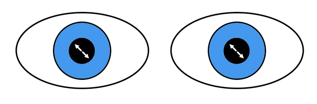

☰
Nystagmus-like Oscillations
Saccades of Inattention

What is it?
Episodic rapid saccades that take the eyes away from straight-ahead gaze
May simply reflect deep thought, but…
May also occur in dementia, delirium, and poor sight
Often confused with other nystagmus-like eye movements
What does it look like?
Small conjugate saccades in any plane that take the eyes away from fixation
Arousing the patient may stop them
If caused by dementia, delirium, or poor sight, nothing stops these movements
What else looks like it?
Volitional flutter
Ocular flutter/opsoclonus
Ocular dysmetria
Square wave jerks
What should you do?
Recognize the underlying setting
No evaluation is necessary if there are no neurologic abnormalities
What will happen?
In dementia and poor sight, these eye movements will persist
In inattention and delirium, the eye movements may resolve if the underlying condition is relieved
May be used to feign illness
Trap:
needless evaluations occur when this eye movement abnormality is not properly distinguished from its imitators!
Nystagmus-like Oscillations
Convergence Retraction
Superior Oblique Myokymia
Square Wave Jerks
Saccades of Inattention
Ocular Flutter and Opsoclonus
Volitional Flutter
Ocular Dysmetria
Ocular Bobbing
Ping Pong Gaze
Oscillations of Internuclear Ophthalmoplegia
Epileptic Oscillations